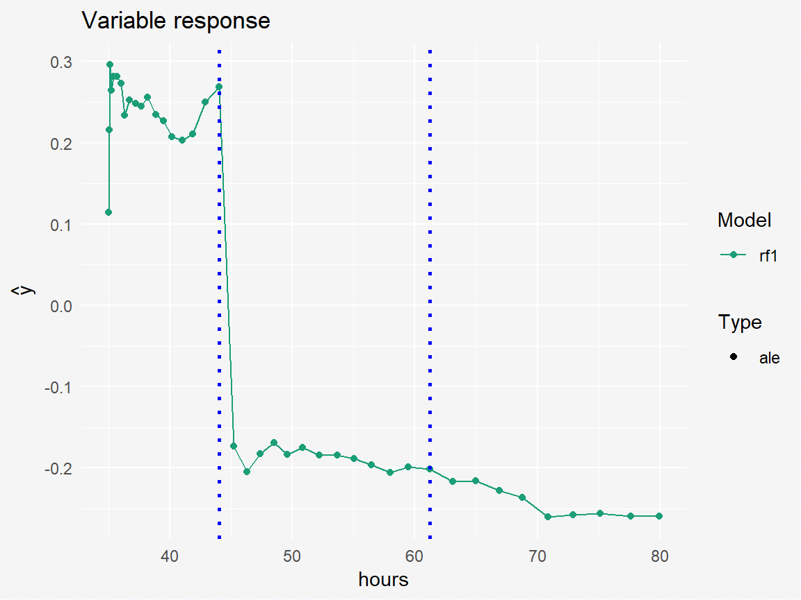

Classification example - HR dataset
Anna Gierlak
2019-04-19
example_hr.RmdIn this vignette we show how you can use SAFE package in classification problem on the example of HR dataset.
First, we fit two models to the original HR dataset - random forest as the black-box model and logistic regression as the white-box model. We focus on predicting whether employee was fired or not.
model_glm1 <- glm(factor(status == "fired") ~ ., data = HR, family = binomial(link = "logit"))
set.seed(111)
model_rf1 <- randomForest(factor(status) ~ ., data = HR)Using SAFE package and DALEX explainer we create safe_extractor object that will store information on variables proposed transformation:
explainer_rf1 <- explain(model_rf1, data = HR[,1:5], y = HR[,6], label = "rf1", predict_function = function(model, x) predict(model, x, type = "prob")[,1])
safe_extractor <- safe_extraction(explainer_rf1, verbose = FALSE)
print(safe_extractor)
#> Variable 'gender' - no transformation suggested.
#> Variable 'age' - selected intervals:
#> (-Inf, 32.1228028740734)
#> [32.1228028740734, 42.0329440198839)
#> [42.0329440198839, 49.9592061061412)
#> [49.9592061061412, Inf)
#> Variable 'hours' - selected intervals:
#> (-Inf, 43.991086979084)
#> [43.991086979084, 61.2377232315204)
#> [61.2377232315204, Inf)
#> Variable 'evaluation' - no transformation suggested.
#> Variable 'salary' - no transformation suggested.Below we can see ALE plot for chosen variable hours with corresponding breakpoints marked:
plot(safe_extractor, "hours")
We can use created safe_extractor object to produce new features that one might include in white-box model:
data1 <- safely_transform_data(safe_extractor, HR, encoding = "categorical", verbose = FALSE)| gender | age | hours | evaluation | salary | status | age_new | hours_new |
|---|---|---|---|---|---|---|---|
| male | 32.58267 | 41.88626 | 3 | 1 | fired | [32.1228028740734, 42.0329440198839) | (-Inf, 43.991086979084) |
| female | 41.21104 | 36.34339 | 2 | 5 | fired | [32.1228028740734, 42.0329440198839) | (-Inf, 43.991086979084) |
| male | 37.70516 | 36.81718 | 3 | 0 | fired | [32.1228028740734, 42.0329440198839) | (-Inf, 43.991086979084) |
| female | 30.06051 | 38.96032 | 3 | 2 | fired | (-Inf, 32.1228028740734) | (-Inf, 43.991086979084) |
| male | 21.10283 | 62.15464 | 5 | 3 | promoted | (-Inf, 32.1228028740734) | [61.2377232315204, Inf) |
| male | 40.11812 | 69.53973 | 2 | 0 | fired | [32.1228028740734, 42.0329440198839) | [61.2377232315204, Inf) |
There are two additional features in the dataset above in comparison to the original HR data. We could use all the variables while fitting the simpler model or we may want to perform a feature selection first - function safely_select_variables returns set of variables such that for each pair {feature, feature_new} exactly one is chosen.
vars <- safely_select_variables(safe_extractor, data1, which_y = "status", encoding = "categorical", verbose = FALSE)
print(vars)
#> [1] "gender" "evaluation" "salary" "age_new" "hours_new"So here is our dataset after feature selection:
data2 <- data1[,c("status", vars)]| status | gender | evaluation | salary | age_new | hours_new |
|---|---|---|---|---|---|
| fired | male | 3 | 1 | [32.1228028740734, 42.0329440198839) | (-Inf, 43.991086979084) |
| fired | female | 2 | 5 | [32.1228028740734, 42.0329440198839) | (-Inf, 43.991086979084) |
| fired | male | 3 | 0 | [32.1228028740734, 42.0329440198839) | (-Inf, 43.991086979084) |
| fired | female | 3 | 2 | (-Inf, 32.1228028740734) | (-Inf, 43.991086979084) |
| promoted | male | 5 | 3 | (-Inf, 32.1228028740734) | [61.2377232315204, Inf) |
| fired | male | 2 | 0 | [32.1228028740734, 42.0329440198839) | [61.2377232315204, Inf) |
We can now fit logistic regression model to the data above and compare performances of two models on the test set.
model_glm2 <- glm(factor(status == "fired") ~ ., data = data2, family = binomial(link = "logit"))
data_test <- safely_transform_data(safe_extractor, HRTest, encoding = "categorical", verbose = FALSE)
data_test <- data_test[,c("status", vars)]
y_pred1 <- predict(model_glm1, HRTest[,1:5], type = "response")
y_pred2 <- predict(model_glm2, data_test[,2:6], type = "response")
pROC::auc((HRTest$status=="fired"), y_pred1)
#> Area under the curve: 0.8063
pROC::auc((HRTest$status=="fired"), y_pred2)
#> Area under the curve: 0.8111